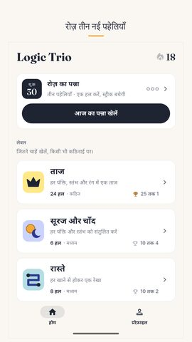
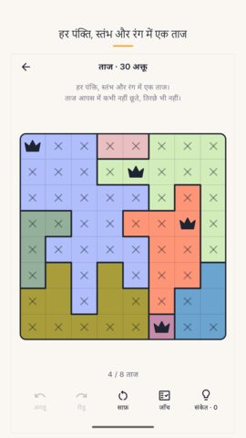
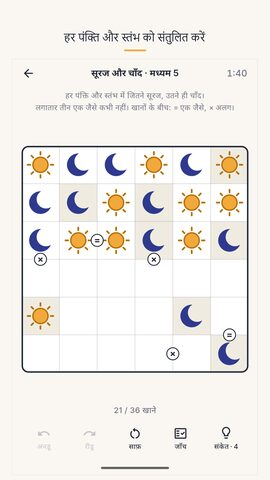
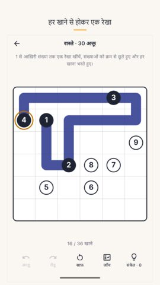
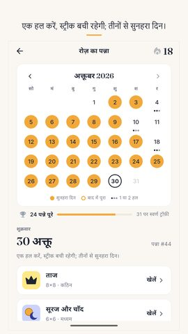
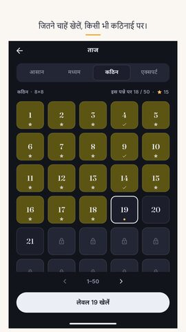
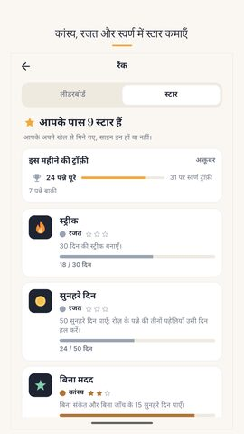
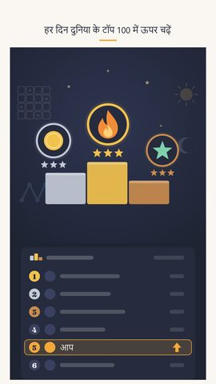

Logic Trio प्रेस किट
गेम के बारे में लिखने या वीडियो बनाने के लिए सब कुछ। इसे खुलकर इस्तेमाल करें।
Logic Trio: रोज़ की पहेली
रोज़ तीन नई पहेलियाँ: ताज, सूरज और चाँद, रास्ते। पूरा गेम ऑफ़लाइन।
वीडियो
स्क्रीनशॉट
















आइकन और बैनर

गेम के बारे में
रोज़ तीन नई पहेलियों का एक पन्ना आता है, और दुनिया भर के हर खिलाड़ी को वही पन्ना मिलता है। ताज, सूरज और चाँद, रास्ते: हर पहेली का ठीक एक ही हल, और ताज तथा सूरज और चाँद में तुक्का कभी नहीं लगाना पड़ता। एक हल करें, स्ट्रीक बची रहेगी; तीनों से सुनहरा दिन।
रोज़ का पन्ना
नया पन्ना हर दिन आधी रात को आता है, आपके अपने फ़ोन के समय से। पहला दिन 17 सितंबर 2026 था, और उसके बाद का हर पन्ना महीने के कैलेंडर पर अब भी मौजूद है, इसलिए जो दिन छूट गया उसे बाद में जाकर खेला जा सकता है। स्ट्रीक बचाने के लिए एक पहेली काफ़ी है, और यह शर्त जान-बूझकर आसान रखी गई है: एक व्यस्त दिन की वजह से हफ़्तों की बनाई हुई स्ट्रीक नहीं टूटनी चाहिए। तीनों हल हो जाएँ तो दिन सुनहरा हो जाता है। महीने में 10 सुनहरे दिन कांस्य ट्रॉफ़ी दिलाते हैं, 20 रजत, और पूरा महीना स्वर्ण। जिन दिनों ज़िंदगी बीच में आ जाती है, उनके लिए स्ट्रीक फ़्रीज़ हैं। पन्ना पूरा होने पर एक छोटा नतीजा-कार्ड मिलता है, बिना किसी स्पॉइलर के, जिसे आप किसी को भी भेज सकते हैं।
तीनों खेल
ताज: हर पंक्ति, हर स्तंभ और हर रंग में एक ताज रखें, और दो ताज कभी आपस में न छुएँ, कोने से भी नहीं। इसे star battle पहेली कहते हैं।
सूरज और चाँद: ग्रिड इस तरह भरें कि हर पंक्ति और हर स्तंभ में जितने सूरज हों उतने ही चाँद, और एक साथ तीन एक जैसे कभी न आएँ। इसे बाइनरी पहेली कहते हैं।
रास्ते: पहली संख्या से आख़िरी तक एक अटूट रेखा खींचें, संख्याओं को क्रम से छूते हुए और रास्ते में हर खाना भरते हुए। यह खींचने वाली पहेली है, और रास्ता आज़माकर निकलता है। इसे number path पहेली कहते हैं।
पहेलियाँ जो ख़त्म नहीं होतीं
रोज़ के पन्ने के अलावा, तीनों खेलों के अपने-अपने लेवल हैं, चार कठिनाइयों में: आसान, मध्यम, कठिन और एक्सपर्ट। चारों पहले मिनट से खुले हैं, क्योंकि कठिन तक पहुँचने के लिए आसान लेवलों से गुज़रने पर मजबूर करना सिर्फ़ आपका समय बर्बाद करता है। हर खेल में 1,200 जाँचे-परखे लेवल हैं, तीनों मिलाकर 3,600, और पैक ख़त्म होने के बाद आपका फ़ोन चुपचाप नए लेवल बनाता रहता है, जब तक आप खेलते रहें। पैक की हर पहेली गेम में डाले जाने से पहले दो अलग तरीक़ों से दो बार हल की गई है, इसलिए ठीक एक ही हल होना जाँची हुई बात है, सिर्फ़ दावा नहीं।
मदद जो सिखाती है
अनडू और रीडू जितनी बार चाहें। जाँच मुफ़्त है और जितनी बार चाहें कर सकते हैं। वह बताती है कि आप कहाँ तक ठीक हैं, बोर्ड हल करके नहीं देती। संकेत भी जवाब नहीं भर देता। वह दिखाता है कि कहाँ देखना है, और ताज तथा सूरज और चाँद में एक वाक्य में बताता है कि उस खाने में वही क्यों होगा, ताकि अगली पहेली पिछली से थोड़ी आसान लगे। अगर बोर्ड पर पहले से कोई ग़लती है, तो संकेत सबसे पहले उसी ग़लती की तरफ़ इशारा करता है।
आपके ख़िलाफ़ कुछ नहीं चलता
न कोई लाइफ़ कटती है, न एनर्जी ख़त्म होती है, न चालें ख़त्म होती हैं, और कोई उल्टी गिनती नहीं होती। घड़ी आगे की ओर चलती है, वह आपके अपने सबसे तेज़ समय के लिए है, और उसे बंद किया जा सकता है। खाता बनाने की ज़रूरत नहीं है। चाहें तो Google Play Games में साइन इन करें: दूसरे फ़ोन पर भी आपकी प्रगति साथ रहेगी, और उपलब्धियाँ और दुनिया भर के लीडरबोर्ड भी मिलेंगे। आपका समय, आपकी सबसे लंबी स्ट्रीक और आपकी हल की हुई पहेलियों की गिनती आपकी प्रोफ़ाइल में रहती है। पूरा खेल ऑफ़लाइन चलता है, बिना इंटरनेट कनेक्शन के।
पढ़ने के लिए बना
अंग्रेज़ी, हिन्दी, पुर्तगाली, स्पेनिश, इंडोनेशियाई, जर्मन और फ़्रेंच। एक लाइट थीम और एक डार्क। रंग-अंधता के लिए रंगीन क्षेत्रों पर पैटर्न, ताकि बोर्ड काले और सफ़ेद में भी काम करे। एक वैकल्पिक रोज़ाना रिमाइंडर, जो आपके कहने तक बंद रहता है। डाउनलोड 25 MB से कम।
मुफ़्त, विज्ञापनों के साथ
Logic Trio एक मुफ़्त पहेली गेम है, जिसका ख़र्च विज्ञापन उठाते हैं। कोई विज्ञापन पहेली के बीच में नहीं आता, गेम खोलते ही नहीं आता, और दिन की तीन पहेलियों के बीच में नहीं आता; पहेलियाँ ख़ुद ऑफ़लाइन हैं, कनेक्शन सिर्फ़ विज्ञापनों को चाहिए। कैलेंडर के पिछले सात दिन हमेशा खुले रहते हैं, और एक छोटा वैकल्पिक वीडियो किसी पुराने पन्ने को हमेशा के लिए खोल सकता है, आपके संकेत बढ़ा सकता है, या टूटी स्ट्रीक जोड़ सकता है। खेलते रहने के लिए इनमें से कुछ भी कभी ज़रूरी नहीं है।
Nimbleknot ने बनाया है।
सवाल और बग रिपोर्ट: nimbleknot.games@gmail.com
गोपनीयता नीति और शर्तें: https://nimbleknot.github.io/logictrio/
मैं प्रोग्रामर नहीं हूँ, इसलिए कोड लिखने में AI ने मेरी मदद की। — Ritesh, Nimbleknot
संपर्क
nimbleknot.games@gmail.com · पूरी जानकारी और फ़ैक्ट शीट (अंग्रेज़ी में)